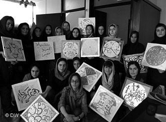

پذيرش > سایت نوشته ها > نمایش ماندالاهای دختران آسیبدیده
 نمایشگاهی با هماهنگی بنیاد مهر نمایشگاهی با هماهنگی بنیاد مهر

 نمایش ماندالاهای دختران آسیبدیده نمایش ماندالاهای دختران آسیبدیده
11 شهریور 1387 - دویچه وله / مهیندخت مصباح - نسخه قابل چاپ
بنیاد "امید مهر"، تشکلی غیردولتی، غیرسیاسی و غیرانتفاعی است که به منظور توانمند سازی زنان و دختران آسیبدیده از مشکلات اجتماعی فعالیت میکند. این بنیاد، دختران فراری، رانده شده و فاقد سرپرست، یا دخترانی را که مورد خشونت و سوءاستفاده خانواده یا جامعه واقع شدهاند، به مدت یکسال و نیم زیر پوشش حمایتی میگیرد. همکاران امید مهر میکوشند با آموزش، مددکاری و روانشناسی، مهارت و اعتماد به نفس دوباره به این دختران بدهند. میانگین سنی این افراد ۱۵ تا ۲۵ سال است. معمولا بین ۵۵ تا ۶۵ دختر در امید مهرحضور دارند.
محرومیتها وآرزوها
فعالیتهای هنری برای دختران امیدمهر "استراحت روحی" هستندبنیاد مهر، افزون بر بخش آموزش کامیپوتر، زبان یا حسابداری، بخش فرهنگ و پرورش نیز دارد. عشرت قلیپور، مدیر اجرایی این بنیاد از نیازهای فرهنگی دخترها میگوید:
«ما بچهها را به موزه و تئاتر میبریم. هیچیک از اینها در زندگی خود چنین جاهایی نرفته بودند. برای آنها کلاسهایی میگذاریم که از زندگی و درون خودشان بنویسند. با خواندن دست نوشتههای این دخترها، تازه متوجه عمق بلاهایی که سرشان آمده، میشویم. یکی از دخترها نوشته که من در کودکی اصلا دلم نمیخواست مادرم را ببینم. چون هر وقت مادرم مرا در خیابان میدید، اسم مرا با یک دشنام و حرف مسخره صدا میزد. اما حالا که بزرگ شدهام، این مادرم است که خودش را از من پنهان میکند چون میداند که دیگر نمیتواند چنین رفتاری با من داشته باشد»
کارگاههای آموزش هنر
از جمله کارهایی که برای بازسازی شخصیتی و روحی این دخترها انجام شده، یکی برگزاری کارگاههای آموزش نقاشی است. خانم گیزلا وارگا- سینایی، در دو سال گذشته، دو کارگاه آموزش نقاشی برای گروهی از دختران امید مهر برگزار کرده که حاصل این آموزشها در گالری دی به نمایش گذاشته میشوند
گیزلا وارگا – سینایی، زاده مجارستان است و بیش از ۴۰ سال است که پس از ازدواج با خسرو سینایی سینماگر، ساکن ایران شده است. خانم سینایی مدتی است که در کنار نقاشی، کارگاههای آموزشی درسراسر دنیا برگزار میکند. ورک شاپی در فنلاند برای زنان پناهنده برمهای، ورک شاپ دیگری در پاریس برای زنان مهاجر کشورهای اسلامی یا کارگاه نقاشی برای دختران دبیرستانی آبادان و خرمشهر از فعالیتهای اخیر او در این زمینه هستند.
ماندالا چیست؟
موضوع آموزش خانم سینایی به دختران موسسه امید مهر، پرداختی در تصویرگری به نام ماندالاست. گیزلا سینایی در توصیف این پرداخت میگوید:
«ماندالا یک دایره است که در یک مربع قرار میگیرد. این در اصل از تبت میآید و در هندوستان هم رایج است. ماندالا در این دو کشور معنای مذهبی دارد و برای تمرکز و عبادت از آن استفاده میشود. اما ماندالا به اروپا و سایر دنیا که رسید، معنای دیگری پیدا کرد. کارل یونگ هم در مورد ماندالا خیلی نوشته و گفته که این شکل دایره و تکرار، به گونهای از نظر خلاقیت به انسان آرامش میدهد و اثر درمانی دارد».
سفری درونی
گیزلا وارگا سینایی که تجربه ۲۵ سال تدریس هنری در ایران را دارد از اثر مستقیم درمانی و روحیه دهندهی ماندالا در میان دختران آسیب دیده میگوید. به گفته خانم وارگا سینایی، اثر این کارگاههای هنری برای دختران، مانند این است که با خلاقیت و تمرکز، به یک مسافرت خوب رفته و یک استراحت روحی کرده باشند:
«این که آدم حوصله کند شکلهای معینی را تکرار کند، رنگ کند، به شکلهای مختلف آنها را بچیند، به حوصله و تمرکز افراد خیلی کمک میکند. تمام بچهها که کار کردند، موفق بودند. خودشان هم تعجب کردند. معنای تراپی ما هم همین بود. اینکه حس کنند میتوانند و در برخی این جرقه ایجاد شود که هنر را میتوانند دنبال کنند، کافی است. من چند نفر را در میان آنها دیدم که میتوانند در آینده گرافیست شوند».
۳۴ نفر از دختران تحت حمایت بنیاد امیدمهر، ماندالاهای خود را به نمایش و فروش میگذارند. در میان آنها لیلا مافی، دختری اراکی نیز به چشم میخورد که مادرش او را درنه سالگی به خودفروشی واداشت. لیلا هنگام ورود به بنیاد امید مهر، زیر تیغ اعدام قرار داشت، بیسواد بود و از پس هیچ کاری نیز بر نمیآمد.
نمایشگاه و بازیابی شخصیت
گیزلا وارگا سینایی تاکید میکند:
«یکی از جنبههای مهم این نمایشگاه، ارضای روانی بچهها است. اینکه کارهایشان مهم بوده و دیگران آنها را میبینند و با یکدیگر مقایسه میکنند. این برای شخصیت آسیب دیده این دخترها، بسیار سازنده است».
ماندالاهای دختران موسسه امید مهر در گالری دی به نمایش درخواهند آمد و تمامی درآمد فروش آنها نیز به صندوق موسسه واریز خواهد شد. مدیر این گالری، فریال سلحشور میگوید:
«من در تیرماه هم برای موسسه "محک" نمایشگاهی در کاخ نیاوران برگزار کردم. من پیشنهاد خانم سینایی را با کمال میل پذیرفتم چون کاری است هم خیریه و هم فرهنگی. نمایش کارهای این بچهها، آنها را از نظر روحی تشویق و تقویت میکند تا شرایط زندگی شان را بهتر کنند».
برخی دختران موسسه امید مهر روی ماندالاهای خود، کلماتی چون عشق یا خشم را نوشتهاند و برخی اسم خواهر یا برادر خود را که دلتنگشان هستند. آیا این واژهها تصادفیاند یا نشان از زخمها و محرومیتهای ژرف این دختران دارند؟
دویچه وله
ارسال به
بالاترین
،
توییتر
،
فریندفید
،
فیسبوک
در همين بخش :
 یک خبر تلخ؟ یک قانونشکنی؟ یک تصمیم بخشنامهای جدید؟ یک خبر تلخ؟ یک قانونشکنی؟ یک تصمیم بخشنامهای جدید؟
چرا بایست به سکسوالیته پرداخت؟ / نفیسه آزاد
آزارجنسی خانگی؛ «قربانی» نه، «نجات یافته»
زنان، بزرگترین بازندگان بهار عرب
سانسور از دیدگاه جنسیتی/الهه امانی
ديگر بخش ها :
طرح یک میلیون امضا
|
مقالات
|
سایت نوشته ها
|
اخبار
|
گزارش كمپين
|
گفت و گو
|
علیه سکوت
|
كوچه به كوچه
|
نامه های شما
|
گزارش ویژه
|
گفتگو با اعضا
|
ویژه سالگرد کمپین
|
تصویر برابری
|
دل آرام علی
|
تریبون
|
مقالات
|
تاریخ شفاهی
|
خارج از چارچوب
|
کتابخانه
|
درباره کمپین
|
کمپین در شهرها
|
کمپین در بند
|
صدای تغییر
|
ویژه 22 خرداد
|
لایحه حمایت از خانواده
|
گالری
|
عشا مومنی
|
امیر یعقوبعلی
|
خدیجه مقدم
|
راحله عسگری زاده و نسیم خسروی
|
پروین اردلان،جلوه جواهری، مریم حسین خواه، ناهید کشاورز
|
زینب پیغمبرزاده
|
سعیده امین، سارا ایمانیان، محبوبه حسین زاده، ناهید کشاورز و همایون نامی
|
احترام شادفر
|
نسیم سرابندی زاده،فاطمه دهدشتی
|
وبلاگ مهمان
|
پرونده خرم آباد
|
دستگیری ها
|
مریم مالک
|
پرستو اللهیاری
|
مهرنوش اعتمادی
|
سمیه رشیدی
|
Other Languages
|
همراهان
|
«فراخوان کمپین ده روز با بهاره هدایت»
| English
|